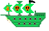
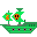
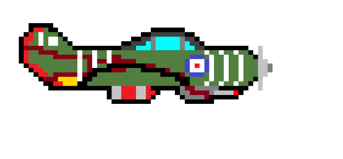
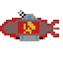
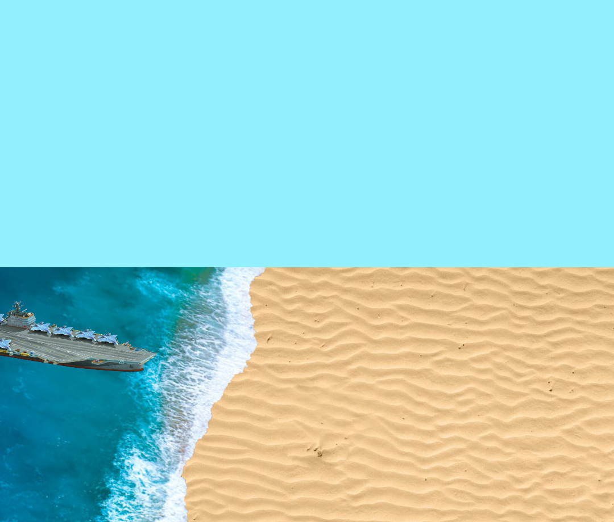

Welcome to our Scrapped Content!
With every project there is a lot of scrapped content over time and here it is
First we have "The Cone" which was supposed to be the starting area before we decided to do a stationary background
.png) Then we have the second part of the space theme aka. the main background
Then we have the second part of the space theme aka. the main background
.png) Yet it did not start with a space theme, we initialy started with a pirate theme; this one had no designed map but already some enemies - most noteworthy - the 2 iterations inspired by Flamehart from the game Sea of Thives and supposed to be a bot. We started with designing models for better inspiration for the final product.
Yet it did not start with a space theme, we initialy started with a pirate theme; this one had no designed map but already some enemies - most noteworthy - the 2 iterations inspired by Flamehart from the game Sea of Thives and supposed to be a bot. We started with designing models for better inspiration for the final product.


The last theme we had was a WW2 theme which our current Background "Normandy" is from



There were a few more sprites but these were either deleted or lost, after we made the decision to not use sprites due to lack of flexibility in our project and our expertise in vector graphics.